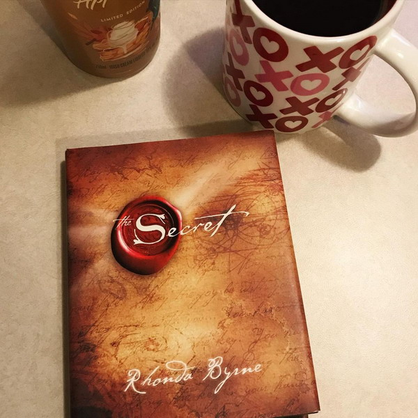

"You create your own universe as you go along"
Sobre mi:
Hola, soy Nat! Soy administradora de empresas y estoy siempre estudiando algo. Actualmente hago la carrera Tech Developer en Digital House y otros cursos en Fundación Telefónica. Me gustan los gatos, los libros y el café. Mis hobbies, además de aprender cosas nuevas, son dibujar, coleccionar cactus, leer libros, mirar series, jugar juegos de mesa o computadora y viajar.